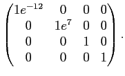

Next: Optimisation of the local Up: The four parameter combinations Previous: The four parameter combinations Contents Index
This is the simplest category as it involves solely the optimisation of the model-free parameters of an individual residue while the diffusion tensor parameters are held constant. The model-free parameters belong to the set
 of the residue
of the residue  . The models include
. The models include  to
to  and the dimensionality is low with
and the dimensionality is low with
|  | (theparentequation.3) |
for the most complex model
 . The relaxation data of a single residue is used to build the chi-squared value, gradient, and Hessian.
. The relaxation data of a single residue is used to build the chi-squared value, gradient, and Hessian.
Edward d'Auvergne 2008-10-09